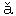

Y（ワイ）口蓋音子音字の一。また母音としては概して“i”と音を同じうし、また二重母音（ay,ey,oy,wy）を作る。
Yacht（yot ――ヨット）【名】遊船、快遊船、競争船（概して小型の快走帆船、また汽船あり）。（-s'man）同上操縦者。【自動】快遊船を操縦する、巡航する、競走する。-'ing【名】同上すること。
Ya'ger（ユェーィガ〜）【名】［独逸陸軍］猟兵（一種の歩兵）。
Ya-hoo'（ヤフ［＃「フ」は上に「⌒」付き］ー）【名】（Swiftの“Gulliver's Travels”中にある）人（の形を有する）獣。（より）人面獣性の人、下劣漢。
Yak（ヤック）【名】［動物］（Thibetの） 牛。
牛。
牛。Y 'lu（ヤール［＃「ル」は上に「⌒」付き］ー）【固名】鴨緑江。
'lu（ヤール［＃「ル」は上に「⌒」付き］ー）【固名】鴨緑江。
'lu（ヤール［＃「ル」は上に「⌒」付き］ー）【固名】鴨緑江。Yam（ヤム）【名】やまのいも、とろろいも。
Ymen（ヤーメン）【支那名詞】衛門。
men（ヤーメン）【支那名詞】衛門。Yang' ＝ tes ＝ kiang'（ヤンツィキアン）【固名】楊子江。
Yan'kee（ヤ※［＃小書き片仮名ン、1587-20］キー）【名】［北米土人の“English［＃「English」は底本では「Enlgish」］”の訛］（米国にては）米国の東北（New England）人。（欧洲にては）米国人。（notions）米国の新発明。（Doodle）米国革命戦争頃より行われし（一種の）国歌。-dom【名】米人界。-ism【名】米国語風。-fied【形】米国かぶれた。
Yap（ヤップ）【自動】（子犬などが）騒がしく吠える。
Yrd（ヤー ド）【名】（一）ヤール（三呎）。
ド）【名】（一）ヤール（三呎）。
rd（ヤード）【名】（一）ヤール（三呎）。Yrd（ヤード）【名】庭、中庭、（何）構内、（何）工場、（何）場。
rd（ヤード）【名】庭、中庭、（何）構内、（何）工場、（何）場。Yrd（ヤード）【名】［航海］（横帆の）帆桁（ほげた）。（＝ rm）桁端。（＝ arm and yard ＝ arm）（両船）桁端相接して。
rd（ヤード）【名】［航海］（横帆の）帆桁（ほげた）。（＝ rm）桁端。（＝ arm and yard ＝ arm）（両船）桁端相接して。Yrn（ヤーン）【名】（木綿などを織る）糸。 ［航海］（麻を撚った）小撚。（より）長物語。To spin a yarn.（麻を紡ぐ様に）長物語をする。注意 麻を撚りて小撚（yarn）を作り、これを合わせ撚りて片撚（strand）を作り、片撚を三條または四條合わせて綱（rope）を作る。
［航海］（麻を撚った）小撚。（より）長物語。To spin a yarn.（麻を紡ぐ様に）長物語をする。注意 麻を撚りて小撚（yarn）を作り、これを合わせ撚りて片撚（strand）を作り、片撚を三條または四條合わせて綱（rope）を作る。
rn（ヤーン）【名】（木綿などを織る）糸。［航海］（麻を撚った）小撚。（より）長物語。To spin a yarn.（麻を紡ぐ様に）長物語をする。注意 麻を撚りて小撚（yarn）を作り、これを合わせ撚りて片撚（strand）を作り、片撚を三條または四條合わせて綱（rope）を作る。Yr'row（ヤロウ）【名】［植物］（＝ milfoil）蓍草（のこぎりぐさ）。
Yat'a-ghan（ヤタガン）【名】回々教国の劔。
Y※［＃下ダイエレシス付きA小文字、1587-33］w（ヨー）【自動】（船が）針路を逸する、風下に流される。【名】同上すること。
Y※［＃下ダイエレシス付きA小文字、1587-34］wl（ヨール［＃「ル」は上に「⌒」付き］）【名】［航海］（船舶付属の）小形短艇。一檣半の帆船型（小遊船に多し）。
一檣半の帆船型（小遊船に多し）。Y※［＃下ダイエレシス付きA小文字、1587-35］wn（ヨーン）【自他動】（人が）欠伸（あくび）する。（out something）欠伸しながら（何か）いう。（地隙、断層などが）大きな口をあく。A yawning gulf. 大口をあいた淵。Hell yawns for him. 地獄が大きな口を開いて彼を待つ。【名】欠伸。
（地隙、断層などが）大きな口をあく。A yawning gulf. 大口をあいた淵。Hell yawns for him. 地獄が大きな口を開いて彼を待つ。【名】欠伸。Y-clept'（イクレ［＃「レ」は上に「⌒」付き］プト）【形】［古］（＝ called）（何と）いう（人や物）。
Ye（ユィー）【人称代名詞】［古］［Thou の複数、主格］汝等（は）。［詩歌］汝等（何々）よ。Ye heavenly powers! 天つ神々よ。 ［俗語］［You の代用］汝は、汝を、汝に。How d'ye do? いかが（お暮し）。What d'ye think? どう思うか。Thank ye. ありがとう。I tell ye.（何々だ）ぜ。
［俗語］［You の代用］汝は、汝を、汝に。How d'ye do? いかが（お暮し）。What d'ye think? どう思うか。Thank ye. ありがとう。I tell ye.（何々だ）ぜ。
［詩歌］汝等（何々）よ。Ye heavenly powers! 天つ神々よ。［俗語］［You の代用］汝は、汝を、汝に。How d'ye do? いかが（お暮し）。What d'ye think? どう思うか。Thank ye. ありがとう。I tell ye.（何々だ）ぜ。Ye※［＃上バー付きA小文字、1588-6］（ユェーィ）【応答詞】［古］（＝ yes）然り、応。【名】［古］（可否の）可。The yeas and nays（＝ ays and noes）. 可とするものと否とするもの（の数）。【接続詞】（and ＝ moreover）また。（＝ nay）（困難）否（不可能であるなど）。
（＝ nay）（困難）否（不可能であるなど）。Yean（ユィーン）【自他動】（羊や山羊が）仔を産む。
Yean'ling（ユィーンリ［＃「リ」は上に「⌒」付き］ング）【名】（lamb or kid）羊の仔、山羊の仔。
Y※［＃上バー付きE小文字、1588-11］ar（ユィーヤ）【名】年、歳。（of grace ―― of our Lord）耶蘇紀元（何）年。（＝ book）年鑑、年報。（＝long）一ヶ年間の。In（the year）1904. 西暦千九百四年に。In the fourth year of Taisho. 大正四年に。In the year 1. 大昔。School（or academic）year. 学年。Fiscal year. 会計年度。From year to year ―― year after year ―― year by year. 毎年毎年（年々歳々）。All the year round. 年中（四時）。Every day of the year ―― year in year out ―― from year's end to year's end. 年百年中。Last year ―― the year before last. 昨年、一昨年。Next year ―― the year after next. 来年、再来年。A year and a day. 一年間（の猶予など） For years. 幾年も幾年も。It is years since we met. 一別以来すでに久し。【複数】年齢。To be young for one's years. 年にしては若い。To be young in years, but old in experience（crime）. 年は若くても功労を経ている。Years of discretion 分別盛り。He is wise beyond his years. 年に似合わず行届いている。To be in years（＝ old）. 年を取っている。
【複数】年齢。To be young for one's years. 年にしては若い。To be young in years, but old in experience（crime）. 年は若くても功労を経ている。Years of discretion 分別盛り。He is wise beyond his years. 年に似合わず行届いている。To be in years（＝ old）. 年を取っている。Y※［＃上バー付きE小文字、1588-24］ar'ling（ユィーヤリ［＃「リ」は上に「⌒」付き］ング）【名】（牛馬などの）二歳児。【形】一年を経たる。（calf）一年（何ヶ月）の仔。（bride）一年経ったばかりの花嫁。
Year'ly（ユィーヤリ［＃「リ」は上に「⌒」付き］ィ）【形】年々の、年一回の（試験など）。【副】年々、毎年。
Y※［＃上バー付きE小文字、1588-27］arn（ヤ〜ン）【自動】（for or after one's child, home, etc.）（我子などを）思う、慕う。（to do something） 切望する。（to or towards a person）（人を）懐（なつか）しく思う、憧（あこが）れる。【無人称他動詞】［古］（It ――s me to think, etc.）心悩む（はらわたのちぎれる思いする）。
Yeast（ユィースト）【名】（麹の醗酵したる）酵母（もと）。パン種。-'y【形】（酵母の如く）泡立てる。（より）醗酵せる、沸騰せる、騒ぐ（心など）。（また泡の如き）口ばかりの、空な（談）。浅薄な（思想）。薄っぺらな（男など）。-'i-ness【名】同上なること。
Yelk（ユェル［＃「ル」は上に「⌒」付き］ク）【名】＝ Yolk（をみよ）。
Yell（ユェル［＃「ル」は上に「⌒」付き］）【自動詞】（with pain ―― with fury ―― with delight ―― with laughter, etc.）わめく、おめく、（いわゆる）黄色い声を出す。（out oaths, orders, etc.）黄色い声でいう。【名】（いわゆる）黄色い声。
Yel'low（ユェロ［＃「ロ」は上に「⌒」付き］ウ）【形、名】黄色（の）。（より＝ jealous, envious, suspicious）嫉み深い、妬み深い、邪推深い。（boy）［俗語］金貨。（fever）（熱帯地方の）黄熱。（flag）検疫旗。（Jack ＝ yellow fever）黄熱。（men）黄色人。（metal ＝ Muntz metal）銅六分と亜鉛四分の合金。（peril）（ある欧州人の唱える）黄禍（黄色人種の侵入を恐るること）。（press）黄色新聞（原 1898 年に Spain との戦争を唱うるため米国に起り、現今にては一般に下層社会の人気を取る新聞）。（races）黄色人種。（spot）［解剖］黄斑（網膜の最も敏感な点）。To turn yellow.（木の葉が）紅葉する。The sere and yellow leaf. 紅葉。The yellows（＝ jaundice or jealousy）. 黄疸。（より）嫉妬。【自他動】黄になる（またはする）。（木の葉が）紅葉する。-ish【形】黄ばんだ。
Yelp（ユェル［＃「ル」は上に「⌒」付き］プ）【自動】（犬が打たれなどして）きゃんきゃん鳴く。【名】同上の声。
Ye※［＃上バー付きO小文字、1589-4］'man（ヨーゥマン）【名】［複数 -'men］（英国の）小農家、小地主、自作農業家。（また）義勇農騎兵（の一人）。（of the guard ＝ beefeater）（英国皇居の）衛士。（-'s service）まさかの時にお役に立つこと、ことある時の報公。To do one yeoman's service. まさかの時にお役に立つ。-ly【形】同上の（ごとき）。-ry【集名】義勇農騎兵。
Yes（ユェス）【応答詞】（No に対し）然り、はい、さよう。注意 「知っているか」と問われても「知らないか」と問われても［＃「問われても」は底本では「問われてもと」］“Yes”と答えれば「知っている」の意味。Won't you come? ―― Yes,（I will）.（行かないか）行こう。I could endure, yes, and（＝ nay）enjoy it. 我慢するどころか悦んでする。He would beat me, yes, or you, either. 彼には僕は負けそうだ、いや君でも負けそうだ。Yes? そうか。【名】（否応の）応、うん。Say yes. うんといえ。Confine yourself to yes and no ―― yeses and noes.（余計なことをいわずに）否応だけいえ。
Yes'ter-【複合詞】（――morn-ing ＝ yesterday morning）［詩］昨朝。（――even-ing or ――eve ＝ last evening）昨晩。（――night ＝ last night）昨夜。
Yes'ter-day（ユェスタ〜ディ）【名】昨日。（morning）昨朝。The day before yesterday. 一昨日。It is but of yesterday. 昨今のこと。I was not born yesterday. そんなお坊ちゃんじゃない。
Yet（ユェット）【副】［打消にともなって］未だ（何々せぬ）。Has the bell rung? ―― It has not rung yet. ―― Not yet.（鐘は）未だ（鳴らぬ）。It is not time yet. 未だ時間にならぬ。I never saw his like yet.（彼の如き人を）未だかつて（見ず）。This is the largest diamond yet found（＝ a larger one has never been found yet）.（裏面に）これより大なる金剛石は未だかつて発見されず（の意味を含む）。He will not recover for some time yet ―― it will not happen just yet. 未だ暫く間がある。注意 打消の潜伏することあり。The time is yet to come. その時は未だ来ぬ。Have you yet to learn what Japan is capable of? 日本の力を未だ知らぬのか。Much yet remains to be done. 未だなさぬことがたくさんある。注意 潜伏打消の場合には往々“as yet”の形を用う。比較 My task is not yet finished ――（as）yet unfinished ―― as yet incomplete. 仕事が未だ出来上らぬ。比較 He is still alive ―― not yet dead. 今なお存命、未だ死なぬ。（a）He is still here.（b）He is not yet here.（a）未だいる。（b）未だ来ぬ。注意 “as yet”を「今なお」の意味に用うれば裏面に打消の意味を含んで直ちにその裏面の意味を連想せしむ。He is as yet alive（＝ not yet dead）. 未だ生きている（未だ死なぬ、今に死ぬだろう）。A conscience as yet clear（＝ not yet obscured）. 未だ曇りなき良心（今に曇るだろう）。The plan has worked well as yet. この方法は今迄の処では工合が好い（今に工合が悪くなるであろう）。【疑問】（＝ already）もう、はや（何々したか）。Has the bell rung yet? もう鐘が鳴ったか。注意 “already”を疑問に用うれば少しくその意味を異にす。比較 （a）Has school begun yet? もう稽古が始まりましたか［尋常の疑問］。（b）Has school begun already? 稽古がもう始まったのですか［驚きの口調］。［詩文］（＝ still）今なお（存命など）。（比較級に附すれば）なおさら、未だ未だ（など）。He is yet alive. 今なお存命。There is life in the old country yet. 未だ寿命がある。There is one yet missing. 未だ一つ見えぬ。I seem to see him yet. 未だ俤が見える。Yet once（more） ――yet again. 今一度。（There is）another and yet another ――（there are）more and yet more. 未だ未だある。Yet higher. 未だ未だ高く。It is yet more difficult. なおさら困難。There is yet hope. 未だ望みあり。注意 この意味より次の用法出づ。未だ断念せず（またはするな）。今に（何々する）。You shall ride in your carriage yet（＝ do not despair of riding in a carriage）. 今に馬車に乗せてやるから安心しろ。He has lost the day, it is ture, but he will win yet（＝ he need not despair of winning）. 今日は負けたが今に勝つこともあろう。I will be even with him yet. 今に怨みを晴らす（怨みを晴さで置く可きか）。（“Nor”にともなって）また。He will not work, nor yet play. 働きもせずまた遊びもせず。He will not liseten to me, nor yet to any one else. また誰のいうことをも聴かぬ。【接続詞】（往々“and”にともなって）それだのに、（何々だ）けれども、それにもかかわらず（＝ nevertheless）。He is nigh upon seventy, and yet he works like a young man. もう七十に近い（それだ）のに若い者の様に働く。It is strange, and yet it is true ―― strange（and）yet true. 妙だけれども本当だ。Deep yet clear. 深いけれども澄んで底が見える。【連関接続詞】（前文の“though,”“although”にともなって）しかし、しかしながら。Although it sounds strange, yet it is true for all that. たとえ異様に聞こえてもしかし真実である。Though deep, yet clear. 深しといえども明らか。
【疑問】（＝ already）もう、はや（何々したか）。Has the bell rung yet? もう鐘が鳴ったか。注意 “already”を疑問に用うれば少しくその意味を異にす。比較 （a）Has school begun yet? もう稽古が始まりましたか［尋常の疑問］。（b）Has school begun already? 稽古がもう始まったのですか［驚きの口調］。［詩文］（＝ still）今なお（存命など）。（比較級に附すれば）なおさら、未だ未だ（など）。He is yet alive. 今なお存命。There is life in the old country yet. 未だ寿命がある。There is one yet missing. 未だ一つ見えぬ。I seem to see him yet. 未だ俤が見える。Yet once（more） ――yet again. 今一度。（There is）another and yet another ――（there are）more and yet more. 未だ未だある。Yet higher. 未だ未だ高く。It is yet more difficult. なおさら困難。There is yet hope. 未だ望みあり。注意 この意味より次の用法出づ。未だ断念せず（またはするな）。今に（何々する）。You shall ride in your carriage yet（＝ do not despair of riding in a carriage）. 今に馬車に乗せてやるから安心しろ。He has lost the day, it is ture, but he will win yet（＝ he need not despair of winning）. 今日は負けたが今に勝つこともあろう。I will be even with him yet. 今に怨みを晴らす（怨みを晴さで置く可きか）。（“Nor”にともなって）また。He will not work, nor yet play. 働きもせずまた遊びもせず。He will not liseten to me, nor yet to any one else. また誰のいうことをも聴かぬ。【接続詞】（往々“and”にともなって）それだのに、（何々だ）けれども、それにもかかわらず（＝ nevertheless）。He is nigh upon seventy, and yet he works like a young man. もう七十に近い（それだ）のに若い者の様に働く。It is strange, and yet it is true ―― strange（and）yet true. 妙だけれども本当だ。Deep yet clear. 深いけれども澄んで底が見える。【連関接続詞】（前文の“though,”“although”にともなって）しかし、しかしながら。Although it sounds strange, yet it is true for all that. たとえ異様に聞こえてもしかし真実である。Though deep, yet clear. 深しといえども明らか。Yew（ユー）【名】（or -tree）［植物］水松（いちい）、あららぎ。
Yg'dra-sil（イグドラスィル［＃「ル」は上に「⌒」付き］）【固名】［北欧神話］その根は地獄に達しその枝は天国に達すという大木。
Yi※［＃上バー付きE小文字、1590-19］ld（ユィール［＃「ル」は上に「⌒」付き］ド）【他動】（＝ give, produce）（土地などが幾らの収穫を）与える、生ずる、産出する。（主格の何々より何が）取れる。The earth yields her increase. 地から収穫が取れる。The land yeilds good crops. この土地から好い作物が取れる。The seed yields good crops. この種は石取りがある。The bonds yields 6％. 公債には六分の利がつく。The investment yields 50％. この投資（商売）は五割の利益がある。Grapes yield wine. 葡萄から葡萄酒が取れる。One koku of rice yields one koku of sake. 米一石から酒一石取れる。How much rice does a tan of rice-field yeild? 田一反から米が何俵取れるか。（＝ give up, deliver over, surrender, resign, concede）譲る、渡す、放棄する。（the fortress to the enemy）城を開け渡す。（the point）論点を譲る、譲歩する。（possession）所有権を譲る。（submission）服従する。（consent）承知する、承諾する。（precedence to age）長者に席を譲る。（the palm to any one）一目置く。（oneself prisoner）降参して捕虜になる。（up the ghost or breath or life）死ぬ。【自動】（well or poorly ―― abundantly or scantily）（主格の土地などから）作物が能く取れる（取れぬ）。降参する、負ける。I would rather die than yield. 死すとも降参せぬ。The courage never to submit or yield. 決して屈せぬ精神。（to ＝ give way to ―― temptation, impulse, etc.）（誘惑などに）負ける、屈する。（to ＝ give way to ―― persuasion, etc.）（人の勧めなどに）従う。（to ＝ submit or surrender to ―― superior numbers）降参する、服従する。（to another in some point）（何では誰に）負ける、譲る。I yield to none in the appreciation of merits. 人の価値を認める点においては誰にも譲らぬ。（＝ give way ―― beneath one's feet）（地など踏むと）へこむ、ぬける。
（＝ give up, deliver over, surrender, resign, concede）譲る、渡す、放棄する。（the fortress to the enemy）城を開け渡す。（the point）論点を譲る、譲歩する。（possession）所有権を譲る。（submission）服従する。（consent）承知する、承諾する。（precedence to age）長者に席を譲る。（the palm to any one）一目置く。（oneself prisoner）降参して捕虜になる。（up the ghost or breath or life）死ぬ。【自動】（well or poorly ―― abundantly or scantily）（主格の土地などから）作物が能く取れる（取れぬ）。降参する、負ける。I would rather die than yield. 死すとも降参せぬ。The courage never to submit or yield. 決して屈せぬ精神。（to ＝ give way to ―― temptation, impulse, etc.）（誘惑などに）負ける、屈する。（to ＝ give way to ―― persuasion, etc.）（人の勧めなどに）従う。（to ＝ submit or surrender to ―― superior numbers）降参する、服従する。（to another in some point）（何では誰に）負ける、譲る。I yield to none in the appreciation of merits. 人の価値を認める点においては誰にも譲らぬ。（＝ give way ―― beneath one's feet）（地など踏むと）へこむ、ぬける。Yo'ga（ヨーゥガ）【名】（インドの）ヨガ教（神人精霊合一）。
Yo'gi（ヨーゥギ）【名】（インドの）yoga 信者。
Yo'-heave-ho'（or yo'-hea-vo'）（ヨーゥヒィーヴォー）【間投詞】（水夫が重い物を捲きあげる時の）えんやらさ。
Yoicks（!）（ヨイックス）【間投詞】狐狩に猟犬を励ます声。
Yoke（ヨーゥク）【名】（牛二頭の頸に掛けて車を曳かせる）軛（くびき）。（より）支配、束縛、制裁、羈絆、ほだし。（夫婦の）縁。（――'fel-low）連合、相棒。（――'mate）同上。The yoke of love. 恋のほだし。To pass under the yoke of some state（何国の）支配を受ける（属国になる）。To shake off ―― shake oneself free from ―― the yoke of some power or influence.（何国の）支配（羈絆）を脱する。To submit to one's yoke. 甘んじて支配を受ける。The heavy yoke of opinion. 輿論の制裁。Japan has never endured the yoke. 日本は他国の支配を受けたことがない。【単複名】（牛）二頭、一対。A yoke of ―― two yoke of ―― oxen. 牛二頭（四頭）。［航海］（短艇の舵の）横柄。（＝line）同上の左右について舵を取る紐。【他動】（牛に）軛を掛ける。（より）束縛する。（one to another）（甲と乙を）繋ぐ、結ぶ、相棒にする、連合にする、夫婦にする。【自動】（together ―― with another ―― well, etc.）揃う（揃わぬ）、似合う（似合わぬ）、折合う（折合わぬ）、合う（合わぬ）。
【単複名】（牛）二頭、一対。A yoke of ―― two yoke of ―― oxen. 牛二頭（四頭）。［航海］（短艇の舵の）横柄。（＝line）同上の左右について舵を取る紐。【他動】（牛に）軛を掛ける。（より）束縛する。（one to another）（甲と乙を）繋ぐ、結ぶ、相棒にする、連合にする、夫婦にする。【自動】（together ―― with another ―― well, etc.）揃う（揃わぬ）、似合う（似合わぬ）、折合う（折合わぬ）、合う（合わぬ）。Y※［＃上バー付きO小文字、1591-12］lk（ヨーゥク）【名】（卵の）黄身、蛋黄。
Yon ＝ Yonder（をみよ）。
Yon'der（ヨンダ〜）【形】［詩文］（遠方の物を指して）あの（山など）。注意 発言者が自分の方を指して「この」は“This”相手の方を指して「その」は“That”遠方を指して「あの」は“Yonder”なれども、現今の英語にては“Yonder mountain”といわずして“that mountain over there”などいう。【副】あそこに。
Yore（ヨーァ）【名】昔、昔日。A giant lived there of yore ―― in days of yore. 昔（巨人の住みし趾）。
Y※［＃下ダイエレシス付きO小文字、1591-19］u（ユー＝＝ユ）【人称代名詞】［所有格 your, yours; 目的格 you］［二人称単複数］汝（等）、あなた（方）、君（達）、おまえ（達）。注意 元複数なれども現今の英語にては単数複数いずれにも用う。Are you there?（電話の）もしもし。You're another.（相手の悪口に対して）お前もそうだ。You fool! あの馬鹿め。You brute! こん畜生め。You there!（名を知らない人に向って）おい君。You bet（＝ you can bet on it!）勿論そうとも［米俗］。Here is something for you! これを君に上げる。Here is news for you! 君に聞かせたいことがある。（より）Here is fighting for you! そんな戦いを君に見せたい様だ。［古］（＝ yourself）Get you gone! 立ち去れ。Sit you down. 坐われ。【不定用法】You never can tell. どうだか分からないからねー。It is hard at first, but you soon get used to it. 初めは苦しいが直きに慣れます。注意 殊に道案内にはこの“you”を用う。As you enter the town, you see to the right a large mansion. 町に入ると右方に当って大きな館がある。
［古］（＝ yourself）Get you gone! 立ち去れ。Sit you down. 坐われ。【不定用法】You never can tell. どうだか分からないからねー。It is hard at first, but you soon get used to it. 初めは苦しいが直きに慣れます。注意 殊に道案内にはこの“you”を用う。As you enter the town, you see to the right a large mansion. 町に入ると右方に当って大きな館がある。Yo ng（ヤング）【形】若き、幼き。（より）未熟な。（また）盛んな。（blood）血気盛んな若者。（hopeful）前途多望の（大事な）息子［滑稽］。（ones）（概して動物の）仔。（children）幼い子供等。（people）（概して）未婚の青年男女。（things）未だ若い（から仕方がないなど）。（'un ＝ youngster）子供。（love）おさないろ。（Japan）日本の青年。（また）同上を代表する政党、新聞（など）。Young and old. 老若、老少。Death comes to young and old. 老少不定。He is young in years, but old in experience（crime, cunning, diplomacy, etc.）. 年は若くとも功労を経ている。An old head on young shoulders. ませた子供。Young sinner, old saint. 若い時は道楽しても年を取って締る人。A young family. 幼い子供等（のある人など）。A young person.（下女下男の言葉にては）どこかの若い女。The young person.（清浄無垢な）若い人（に悪いことを教えるなど）。My young man ―― my young woman. 好い人（情人）。The night（year, century）is yet young. 夜は更けぬ（時節が長けぬなど）。You young rascal!（これ）ぼーず（男の子に向かって戯れにいう）。A young man in a hurry. 改革熱心家（など）。He looks young for his years. 年にしては若い。Men are（call themselves）young at fifty. 男は五十になっても若い気だ。In my young days（＝ when I was young）. 僕が若い時。Whom the gods love, die young. 神の愛し給う者は早世す（才子短命）。A tiger must be caught young. 虎は子飼いでないと馴れぬ。（より）Sailors must be caught young. 船乗は子飼いに限る。The younger Pitt ―― Pitt the younger.（親子の）子の方。He is helpful to his youngers. 後進の世話をする（“one's elders”に対す）。【集名】（動物の）子（等）。Some animals care for their young, others desert them. 子の世話をする動物とせぬ動物とがある。To be（great）with young.（動物が）孕んでいる。
ng（ヤング）【形】若き、幼き。（より）未熟な。（また）盛んな。（blood）血気盛んな若者。（hopeful）前途多望の（大事な）息子［滑稽］。（ones）（概して動物の）仔。（children）幼い子供等。（people）（概して）未婚の青年男女。（things）未だ若い（から仕方がないなど）。（'un ＝ youngster）子供。（love）おさないろ。（Japan）日本の青年。（また）同上を代表する政党、新聞（など）。Young and old. 老若、老少。Death comes to young and old. 老少不定。He is young in years, but old in experience（crime, cunning, diplomacy, etc.）. 年は若くとも功労を経ている。An old head on young shoulders. ませた子供。Young sinner, old saint. 若い時は道楽しても年を取って締る人。A young family. 幼い子供等（のある人など）。A young person.（下女下男の言葉にては）どこかの若い女。The young person.（清浄無垢な）若い人（に悪いことを教えるなど）。My young man ―― my young woman. 好い人（情人）。The night（year, century）is yet young. 夜は更けぬ（時節が長けぬなど）。You young rascal!（これ）ぼーず（男の子に向かって戯れにいう）。A young man in a hurry. 改革熱心家（など）。He looks young for his years. 年にしては若い。Men are（call themselves）young at fifty. 男は五十になっても若い気だ。In my young days（＝ when I was young）. 僕が若い時。Whom the gods love, die young. 神の愛し給う者は早世す（才子短命）。A tiger must be caught young. 虎は子飼いでないと馴れぬ。（より）Sailors must be caught young. 船乗は子飼いに限る。The younger Pitt ―― Pitt the younger.（親子の）子の方。He is helpful to his youngers. 後進の世話をする（“one's elders”に対す）。【集名】（動物の）子（等）。Some animals care for their young, others desert them. 子の世話をする動物とせぬ動物とがある。To be（great）with young.（動物が）孕んでいる。
ng（ヤング）【形】若き、幼き。（より）未熟な。（また）盛んな。（blood）血気盛んな若者。（hopeful）前途多望の（大事な）息子［滑稽］。（ones）（概して動物の）仔。（children）幼い子供等。（people）（概して）未婚の青年男女。（things）未だ若い（から仕方がないなど）。（'un ＝ youngster）子供。（love）おさないろ。（Japan）日本の青年。（また）同上を代表する政党、新聞（など）。Young and old. 老若、老少。Death comes to young and old. 老少不定。He is young in years, but old in experience（crime, cunning, diplomacy, etc.）. 年は若くとも功労を経ている。An old head on young shoulders. ませた子供。Young sinner, old saint. 若い時は道楽しても年を取って締る人。A young family. 幼い子供等（のある人など）。A young person.（下女下男の言葉にては）どこかの若い女。The young person.（清浄無垢な）若い人（に悪いことを教えるなど）。My young man ―― my young woman. 好い人（情人）。The night（year, century）is yet young. 夜は更けぬ（時節が長けぬなど）。You young rascal!（これ）ぼーず（男の子に向かって戯れにいう）。A young man in a hurry. 改革熱心家（など）。He looks young for his years. 年にしては若い。Men are（call themselves）young at fifty. 男は五十になっても若い気だ。In my young days（＝ when I was young）. 僕が若い時。Whom the gods love, die young. 神の愛し給う者は早世す（才子短命）。A tiger must be caught young. 虎は子飼いでないと馴れぬ。（より）Sailors must be caught young. 船乗は子飼いに限る。The younger Pitt ―― Pitt the younger.（親子の）子の方。He is helpful to his youngers. 後進の世話をする（“one's elders”に対す）。【集名】（動物の）子（等）。Some animals care for their young, others desert them. 子の世話をする動物とせぬ動物とがある。To be（great）with young.（動物が）孕んでいる。Yong'ling（ヤ※［＃小書き片仮名ン、1592-11］グリ［＃「リ」は上に「⌒」付き］〜グ）【名】［詩歌］若者、未熟者。
ng'ling（ヤ※［＃小書き片仮名ン、1592-11］グリ［＃「リ」は上に「⌒」付き］〜グ）【名】［詩歌］若者、未熟者。Yong'ster（ヤ※［＃小書き片仮名ン、1592-12］グスタ〜）【名】（＝ child）子供。（ことに）いたずらっ子。
ng'ster（ヤ※［＃小書き片仮名ン、1592-12］グスタ〜）【名】（＝ child）子供。（ことに）いたずらっ子。Yonk'er（ヤ※［＃小書き片仮名ン、1592-13］カ〜）【名】（＝ youngster）子供。
nk'er（ヤ※［＃小書き片仮名ン、1592-13］カ〜）【名】（＝ youngster）子供。Y※［＃下ダイエレシス付きO小文字、1592-14］ur（ユーア＝＝ヨア）【You の所有格】汝の、君の、あなたの。（より）君のいわゆる、例の。I do not care much for your true Japanese cookery. 例の本式の会席料理はあまり感心せぬ。So this is your perfect gentleman. ではこれが君のいわゆる申分のない紳士かね。
Y※［＃下ダイエレシス付きO小文字、1592-17］urs（ユーアズ）【You の独立所有格】汝の（もの）、あなたの（もの）、君の（もの）。Is this your book? ―― Is this book yours? この本は君のか。Is he a friend of yours? あれは君の友人か。Those hands of yours. お前のその手（はきたないなど）。You and yours. 君と御家族（等）。Yours is to hand. 御書簡落手。Yours of the 5th. 五日づけの御書簡。It shall be yours（＝ I will give it you）. それを君に上げる。Ever yours, ―― Yours truly, ―― Yours faithfully. … 頓首再拝（と書状を結ぶに相当）。Yours truly is not taking any.（酒などを勧められて）拙者はもうたくさん。
Your-self'（ユーアセル［＃「ル」は上に「⌒」付き］フ）【反照代名詞】［複数 -selves'］［主格は文の主格を強む］自身に、自分で、君も、あなたでさえ。Please see to it yourself. 御自身に御注意を願う。You said so yourself. 君は自分でそういった。You do it yourself. 君もする（じゃないか）。You are not quite yourself to-night. 今夜は元気があがらないね。【目的格は Reflexive Verb を作る】Know yourself. 己を知れ。You deceive yourself. 君は誤解している。【目的格は前置詞と結合して熟語を作る】Why are you sitting by yourself（＝ alone）? なぜ独りでいるのか。Did you do it by yourself?（手伝なしに）独りでしたのか。You ought to find out for yourself.（人に説明してもらわないで）自分で研究して見るがよい。Do you awake of yourself?（朝起こしてもらわないで）独りで目を覚ますか。
【目的格は Reflexive Verb を作る】Know yourself. 己を知れ。You deceive yourself. 君は誤解している。【目的格は前置詞と結合して熟語を作る】Why are you sitting by yourself（＝ alone）? なぜ独りでいるのか。Did you do it by yourself?（手伝なしに）独りでしたのか。You ought to find out for yourself.（人に説明してもらわないで）自分で研究して見るがよい。Do you awake of yourself?（朝起こしてもらわないで）独りで目を覚ますか。Y※［＃下ダイエレシス付きO小文字、1592-34］uth（ユーツ［＃「ツ」は上に「⌒」付き］）【Young の抽象名詞】若い時、青年時代、若さ、幼少、若年。He travelled in his youth（＝ when he was young）. 若い時（漫遊した）。He has all the appearance of extreme youth. いかにも若そうな様子。He was wild in his hot（raw, vigorous）youth. 若い時は放蕩した。He was diligent from youth upwards. 若い時から勉強家であった。Youth's a stuff will not endure. 少年老い易し。The secret ―― of perpetual youth ―― of keeping one's youth. 不老の秘訣。The youth of the world. 古代（太古）。【普名】（複数＝＝ユーヅ［＃「ヅ」は上に「⌒」付き］ズ）青年、若者。A youth ―― some youths ―― from the provinces. 地方出の青年。【集名】青年輩、若者共。The education of youths. 青年の教育。Our youth are ambitious. 日本の青年は大志あり。-'ful【形】青年の、若き。-'ful-ly【副】同上に。-'ful-ness【名】同上なること。
【普名】（複数＝＝ユーヅ［＃「ヅ」は上に「⌒」付き］ズ）青年、若者。A youth ―― some youths ―― from the provinces. 地方出の青年。【集名】青年輩、若者共。The education of youths. 青年の教育。Our youth are ambitious. 日本の青年は大志あり。-'ful【形】青年の、若き。-'ful-ly【副】同上に。-'ful-ness【名】同上なること。Yule（ユール［＃「ル」は上に「⌒」付き］）【名】（or -tide ＝ Christmas festival）基督降誕祭。（-log）同祭の前夜（宵祭）に焚く丸太。